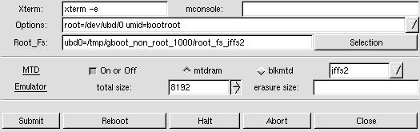

bOOTrOOT makes the development, construction, and testing of distributions fun and simple.
Download gBootRoot
Stable version

How to Use gBootRoot
The most important button to familiarize yourself with is the Submit button which starts the whole process; dialogs are presented as the process continues asking you if you want to continue "OK" or stop "Cancel".
The first row presently has only one Boot Method choice: "2 disk compression." Clicking on the menu on the right selects the Boot Method.
The second row allows you to select the kernel for the Boot/Root set. You may either use the file selector button on the right hand side, or you may type in the location on the left hand side.
The third row allows you to select the compressed filesystem you are providing, using either of the two ways mentioned before. You may use a pre-made root filesystem or you may create one using one of the Methods provided in the Advanced Root Section.
The fourth row allows you to select the device you want to use. The default device is the first floppy disk - /dev/fd0.
The fifth row allows you to choose the size of the device being used. The default size of 1440 assumes you are using a floppy drive (Note: You may want to experiment with 1722 which works fine with many floppy drives.), but can be used with other sized devices like tape drives. Click on the appropriate radio button to choose either gzip or bzip2 compression if the program doesn't automatically detect it.
Verbosity Box
The slider bar on the right allows the output of the verbosity box to be changed from the highest (2) to the lowest setting (1) or to be turned off (0) or on again. At times it may be advantageous to turn off the verbosity box since large quantities of output to this box may cause gbootroot to use too much cpu power; however, output may still be found in the text file "verbose" in /tmp/gbootroot_tmp'time-date'.Using the Advanced Boot Section
 "Stripping" On by default for libraries and binaries. The stripping
behavior for libraries may be changed by clicking on the right mouse button
to change from --strip-debug to --strip-all.
"Stripping" On by default for libraries and binaries. The stripping
behavior for libraries may be changed by clicking on the right mouse button
to change from --strip-debug to --strip-all.
"Devel Device" If the device used for development is different than the actual boot device, use this field to indicate that device. You will have to run lilo -v -C brlilo.conf -r "device mount point" manually at a later time on the actual boot device.
"Opt. Device" Add devices to the boot disk which are necessary for the kernel to function properly. Put a space between each device. For instance, /dev/fb0 for frame buffer devices.
"Kernel Module" Add the modules found in /lib/modules/kernel-version which are necessary for the Boot Method to work properly. If these modules aren't found here it is assumed that they either are in the kernel or they do not exist.
"append =" Add append options to brlilo.conf. If you are using a frame buffer device you could add something like video=matrox:vesa:402,depth:16.
Using the Advanced Root Section
 "Root Device"
This is the device used for the root filesystem when
constructing the Boot/Root set.
You may choose a device which is different
than the Boot device, but presently only floppy devices are supported.
"Root Device"
This is the device used for the root filesystem when
constructing the Boot/Root set.
You may choose a device which is different
than the Boot device, but presently only floppy devices are supported.
"Root Device Size" The size of the actual media used for the Root Device.
"Root Filename" The name give to the root filesystem when initially made in the temporary creation location. The save button allows the creation to be saved in the permanent default location when the Accept button is pressed.
"Filesystem Size" Root Methods make the filesystem the size which is specified here.
"Compression" Off by default to allow user-mode-linux testing. Turn on compression when you are ready to use a Boot Method which requires compression.
"Method" The root filesystem creation method.
"Template" The template associated with a Root Method. Not all Root Methods have templates.
"Generate" This puts the chosen Root Method in action.
"UML" Abbreviation for user-mode-linux. This is a linux kernel which runs on top of the host system's linux kernel and allows a you run a live root filesystem.
"Accept" This accepts the created root filesystem if it is found in the temporary creation directory. The UML box and the main section will now reflect the path to this root filesystem. You can now test with the UML button or a put together a complete Boot/Root set with the Submit button.
User Mode Linux Box
 "Xterm" Choose an xterm with its executable options switch.
"Options" Enter uml command-line options like: mem=64, devfs=nomount.
"Root_Fs" Choose an uncompressed root filesystem. Append with ubd?=.
"Abort" Abort user-mode-linux kernel processes.
About the Yard Box

The check boxes at the bottom represent the different stages involved in creating a root filesystem. The behavior of these stages may be altered in three ways: Edit->Stages->one-by-one (default) will perform each stage sequentially, stopping between each stage, the user may continue the process by pressing the Continue button. Edit->Stages->continuous proceeds non-stop through all the stages. Edit->Stages->'user defined' allows the user to choose any stages the user wants, and will then proceed through all the chosen stages. Choosing only 'Check', 'Links & Deps', 'Create" is a good example.

The behavior of some of the stages may be altered. For instance Alt-T allows you to choose which tests to run on the newly created root filesystem.
Press Alt-S to enable template text searching in either direction. Find exact matches or ignore case with the case sensitive check box.
Use Ctl-S to save the changes to an open template, and Alt-A to save the template with a new name. bOOTrOOT will not allow read-only templates or template links to be saved with their own name. A few of these example files are included. You may make changes to them or clear their buffers. Then you may save the template with a different name.
Edit->Settings->Stripping allows you to turn off/on stripping for Libraries, Binaries, and Modules. --strip-all is the default stripping behavior, but Libraries may have this behavior changed to --strip-debug.

Edit->Setting->Paths allows you to prepend a new search path to your environments $PATH variable.

Edit->'File System" may alter the type of filesystem used to make the root filesystem. Because the filesystem is created on a loop device, some filesystem types may complain or not be created at all.

Edit->Replacements in your $HOME/.gbootroot/Replacements directory using an editor of your choice.
Create->Replacements creates special replacement files. Presently it creates an fstab configuration file as Replacements/etc/fstab.new in $HOME/.gbootroot/yard/.
Little things you may want to know:
* gBootRoot requires ash for initrd. Ash is a feather weight version of Bash.
 FAQ
FAQ
What does the 2 disk compression method do?
This Boot Method creates a boot disk with lilo, a kernel and an initrd image. The initrd script mounts another root disk with a compressed (gzip or bzip2) filesystem.
What's the advantage of using this program?
You can use a bzip2 compressed filesystem, this program is easy to use, and it provides a framework showing a simple initrd method which you can freely modify. I wrote this program as an extension to BootRoot which was written as a solution to help oster at EE (www.experts-exchange.com) create separate boot and root floppies for an emergency system for his customers.
BootRoot was the original program, but it was decided that a GUI approach provided the user much more versatility and power in creating distributions.
If you make a cool change to this program, or if this program helps you I'd love to know, that's better than receiving pizza. :)
How can I test gBootRoot?
1. Download root_fs_tomrtbt_1.7.205.bz2 at Sourceforge.
2.
[Ctrl] ([Tab] to see available images)
boot: bootdisk single [Enter]
( now filesystem is single user mode)
exit [Enter]
(now you are in multi user mode)
Better yet, do [Ctrl]
boot: bootdisk 2 [Enter]
Why doesn't looplinux work as "bootdisk 1?"
There is a difference between "1" and "single." Looplinux was written in a way that runlevel 1 doesn't work properly in relation to gBootRoot unless single is used. And you thought they were the same thing? gBootRoot proves otherwise.
gBootRoot doesn't start because it can't locate Gtk.pm?
This program requires Gtk-Perl available from CPAN, Freshmeat or most GNU/Linux distributions.
There isn't enough room left on my 1440 floppy to make a Boot or Root disk. Is there any way to free up more space apart from reducing the size of the kernel?
Move the device size to 1722. This is a trick that tomsrtbt uses on his famous rescue disk.
If you roll the floppy density counter down to 0 and then try go back up towards 1440 and 1722, you get very funny figures.
This is because of the way Gtk works. There are two adjustments, step and page increments. When you press your first mouse button the step has been set to 282 so that a person can easily switch between 1440 and 1722. When you use your second mouse button the page is set at 360. You can go down to zero by pressing your third mouse button on the down arrow. Now page up with the second button to 1440 and step with the first button to 1722. Pretty cool, eh?
Why we are on this subject please check out these keyboard shortcuts for Gtk.
Motion Shortcuts
Editing Shortcuts
Selection Shortcuts